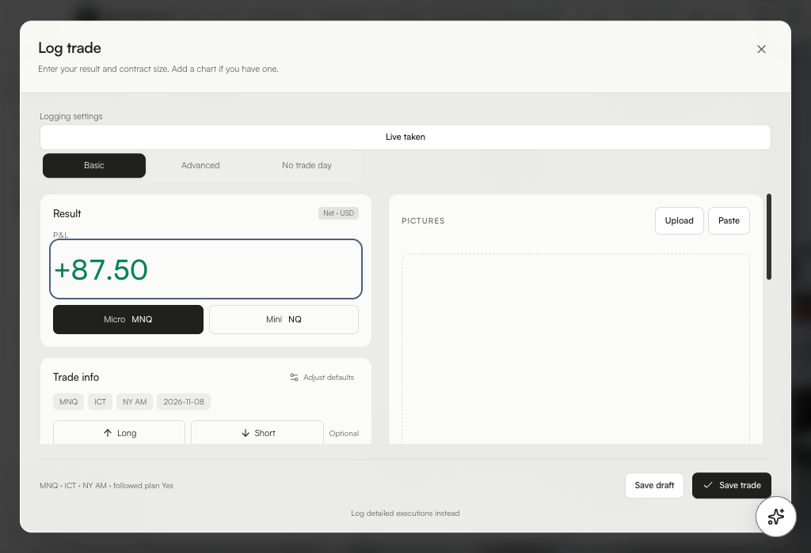

Mac
For Apple Silicon. Open the disk image and drag the suite into Applications.
Mac download and setupDesktop tester beta
Log a trade in seconds, review your sessions and personalize your TradingView chart. Each installer includes both apps and the built-in offline Coach.
For Apple Silicon. Open the disk image and drag the suite into Applications.
Mac download and setupFor x64 PCs. Run Setup once, then open either app from Start.
Windows download and setupThe trailer shows quick trade logging, a local Coach follow-up, and ChartVeil’s background preview using sample data. Download the MP4

Learn how to log a trade, talk to Coach, choose a look, and connect ChartVeil. The same Journal guide is available from the question-mark button in the app.
Open the illustrated app guide